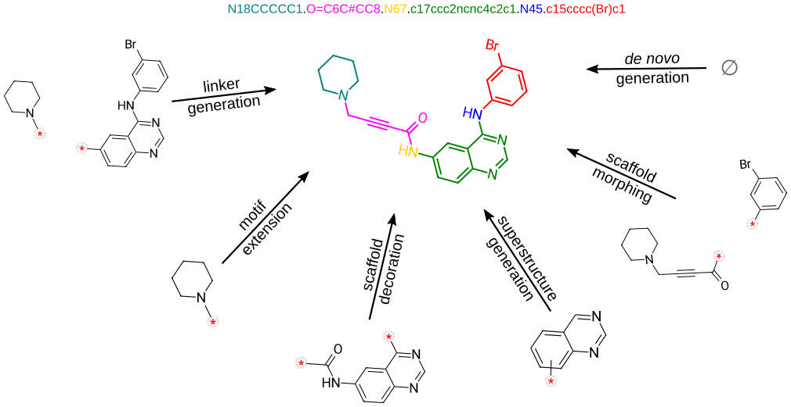
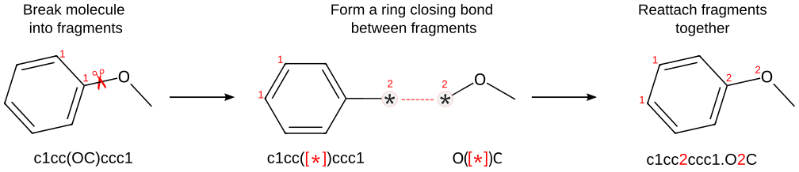

🦺 SAFE
Sequential Attachment-based Fragment Embedding (SAFE) is a novel molecular line notation that represents molecules as an unordered sequence of fragment blocks to improve molecule design using generative models.

Paper | Docs | 🤗 Model | 🤗 Training Dataset


Overview of SAFE¶
SAFE is the deep learning molecular representation. It's an encoding leveraging a peculiarity in the decoding schemes of SMILES, to allow representation of molecules as a contiguous sequence of connected fragments. SAFE strings are valid SMILES strings, and thus are able to preserve the same amount of information. The intuitive representation of molecules as an ordered sequence of connected fragments greatly simplifies the following tasks often encountered in molecular design:
- de novo design
- superstructure generation
- scaffold decoration
- motif extension
- linker generation
- scaffold morphing.
The construction of a SAFE strings requires defining a molecular fragmentation algorithm. By default, we use [BRICS], but any other fragmentation algorithm can be used. The image below illustrates the process of building a SAFE string. The resulting string is a valid SMILES that can be read by datamol or RDKit.

News 🚀¶
💥 2026/09/03 💥¶
- SAFE 0.2.0 release. Improves stereochemistry preservation, decoding and sampling, moves SAFE-GPT to Transformers 5, and separates optional model and training dependencies from the notation core. See the changelog and migration guide for fixes, deprecations and compatibility limits.
💥 2024/01/15 💥¶
- @IanAWatson has a C++ implementation of SAFE in LillyMol that is quite fast and use a custom fragmentation algorithm. Follow the installation instruction on the repo and checkout the docs of the CLI here: docs/Molecule_Tools/SAFE.md
Installation¶
SAFE 0.2.0 supports Python 3.11 through 3.14.
uv add safe-mol # or: pip install safe-mol
mamba install -c conda-forge safe-mol
The base install covers the notation core (safe.encode, safe.decode,
safe.split) and molecule visualization, and needs no PyTorch — so it runs
anywhere, including Mac Intel. The model stack is a single optional extra:
| Install | Includes |
|---|---|
safe-mol |
Notation core + molecule visualization |
safe-mol[model] |
Everything above plus SAFE-GPT inference, the safe-train CLI and W&B logging |
uv add "safe-mol[model]" # or: pip install "safe-mol[model]"
Installing the extra always includes the base, so safe-mol[model] gives you
the core, visualization and the full model stack. Model APIs keep their
top-level imports but load their dependencies only when used. The model extra
requires PyTorch 2.5+; official Mac Intel wheels stop at 2.2, so use Linux,
Windows or Apple Silicon for that stack. It uses Transformers 5, and RDKit
2026.03 is excluded because of an upstream stereochemistry regression (RDKit
2024.09 through 2025.09 are covered by CI). Read
Migrating to SAFE 0.2.0 before upgrading an existing
environment.
For constrained design, try_hard=True is the opt-in quality mode. It
oversamples, validates the molecular and substructure constraints, and removes
duplicates while preserving generation order. Use max_new_tokens to set a
prompt-independent generation budget:
designer.scaffold_decoration(
scaffold,
n_samples_per_trial=20,
max_new_tokens=80,
try_hard=True,
)
Datasets and Models¶
| Type | Name | Infos | Size | Comment |
|---|---|---|---|---|
| Model | datamol-io/safe-gpt | 87M params | 350M | Default model |
| Training Dataset | datamol-io/safe-gpt | 1.1B rows | 250GB | Training dataset |
| Drug Benchmark Dataset | datamol-io/safe-drugs | 26 rows | 20 kB | Benchmarking dataset |
Usage¶
The tutorials in the documentation can help you get started with safe and SAFE-GPT.
API¶
We summarize some key functions provided by the safe package below.
| Function | Description |
|---|---|
safe.encode |
Translates a SMILES string into its corresponding SAFE string. |
safe.decode |
Translates a SAFE string into its corresponding SMILES string. The SAFE decoder just augment RDKit's Chem.MolFromSmiles with an optional correction argument to take care of missing hydrogens bonds. |
safe.split |
Tokenizes a SAFE string to build a generative model. |
Examples¶
Translation between SAFE and SMILES representations¶
import safe
ibuprofen = "CC(Cc1ccc(cc1)C(C(=O)O)C)C"
# SMILES -> SAFE -> SMILES translation
try:
ibuprofen_sf = safe.encode(ibuprofen) # c12ccc3cc1.C3(C)C(=O)O.CC(C)C2
ibuprofen_smi = safe.decode(ibuprofen_sf, canonical=True) # CC(C)Cc1ccc(C(C)C(=O)O)cc1
except safe.SAFEEncodeError:
pass
except safe.SAFEDecodeError:
pass
ibuprofen_tokens = list(safe.split(ibuprofen_sf))
Training/Finetuning a (new) model¶
A command line interface is available to train a new model, please run safe-train --help. You can also provide an existing checkpoint to continue training or finetune on you own dataset.
For example:
safe-train --config <path to config> \
--model-path <path to model> \
--tokenizer <path to tokenizer> \
--dataset <path to dataset> \
--num_labels 9 \
--torch_compile True \
--optim "adamw_torch" \
--learning_rate 1e-5 \
--prop_loss_coeff 1e-3 \
--gradient_accumulation_steps 1 \
--output_dir "<path to outputdir>" \
--max_steps 5
References¶
If you use this repository, please cite the following related paper:
@misc{noutahi2023gotta,
title={Gotta be SAFE: A New Framework for Molecular Design},
author={Emmanuel Noutahi and Cristian Gabellini and Michael Craig and Jonathan S. C Lim and Prudencio Tossou},
year={2023},
eprint={2310.10773},
archivePrefix={arXiv},
primaryClass={cs.LG}
}
License¶
The training dataset is licensed under CC BY 4.0. See DATA_LICENSE for details. This code base is licensed under the Apache-2.0 license. See LICENSE for details.
Note that the model weights of SAFE-GPT are exclusively licensed for research purposes (CC BY-NC 4.0).
These licences apply to separate materials. The Python package does not redistribute the model weights.
Development lifecycle¶
Setup dev environment¶
uv sync --all-extras
This creates an isolated .venv with the training, visualisation, reporting,
test, documentation and development extras. env.yml remains available when a
Conda environment is required.
Tests¶
You can run tests locally with:
uv run python -m pytest -m "not integration"
uv run python -m pytest -m integration --no-cov
The integration command validates the published SAFE-GPT model and executes
the maintained tutorials. GitHub Actions runs the same command. Use
uv run python -m pytest -m notebook --no-cov when iterating on tutorials only.